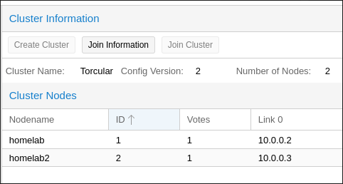
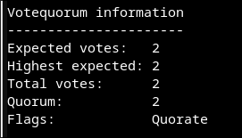

Joining Proxmox Cluster
This weekend, I’m hitting the limit of my testing infrastructure. My set up was very humble. A Dell mini tower Micro Optiplex 7050 with only 16GB RAM and 256GB SSD. I mean, in this economy <sigh>. Luckily, I have an old laptop lying around and the next thought was creating a cluster of Proxmox. Proxmox is no stranger to homelabbers for its uses in hosting VMs and containers.
Before joining the nodes, make sure they are time synced. Try to ping each other to check for connectivity.
To join a cluster, we need a cluster. First, make sure you have a cluster created from an existing node. To do this, go to Datacenter > Cluster > Create Cluster.

Copy the Joining Information from the existing node. Then visit the web UI of the new node. Go to Datacenter > Cluster > Join Cluster and paste the Joining Information. The node will need a reboot. After a minute, or 2, check on the node to see if it joined the cluster with this command systemctl status pve-cluster corosync. If the new node shows OK then the join succeeded, the web UI may need to be refreshed.
On etiher node, run: pvecm status and you’re expected to see results like this:
